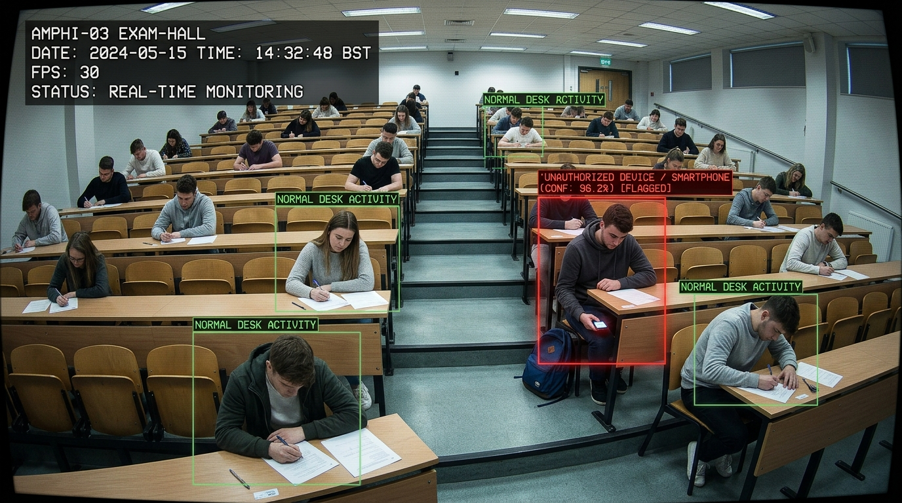

01
Perceive
Connect securely to existing video streams and identify relevant objects, behaviors and conditions.
Sovereign computer vision
EyeSafe transforms existing camera infrastructure into private, real-time intelligence—helping critical environments detect risk, coordinate decisions and respond with confidence.
On-premise by design
Works with existing cameras
Real-time operational alerts
Built for controlled environments
The platform
EyeSafe observes critical scenes locally, interprets events as they happen and delivers only the information teams need to act. The result is a clearer operational picture without sending sensitive footage to an external cloud.
Connect securely to existing video streams and identify relevant objects, behaviors and conditions.
Apply context-aware rules at the edge, close to the scene and independent of public cloud connectivity.
Route actionable alerts and evidence to the right team, system or control point in real time.
Applications
Monitor PPE compliance, restricted areas and interactions between people and vehicles—while keeping safety teams focused on events that require attention.
 Access & logistics
Access & logisticsRecognize vehicles, plates and container references to support faster, more controlled site access.

Academic integritySurface unusual events for human review and create a consistent, time-referenced record for exam teams.
Private by architecture
EyeSafe processes camera streams inside your environment. Raw footage does not need to travel to a third-party cloud for interpretation, giving your organization direct control over data, latency and continuity.
Discuss your environmentA measured approach
We map the operational objective, camera coverage, environment and constraints.
A focused pilot tests the use case against real conditions and team workflows.
We integrate the edge system, alert paths and governance around your operation.
Tell us about one operational challenge. We will explore how a focused on-site pilot could address it.
contact@eyesafe.ai